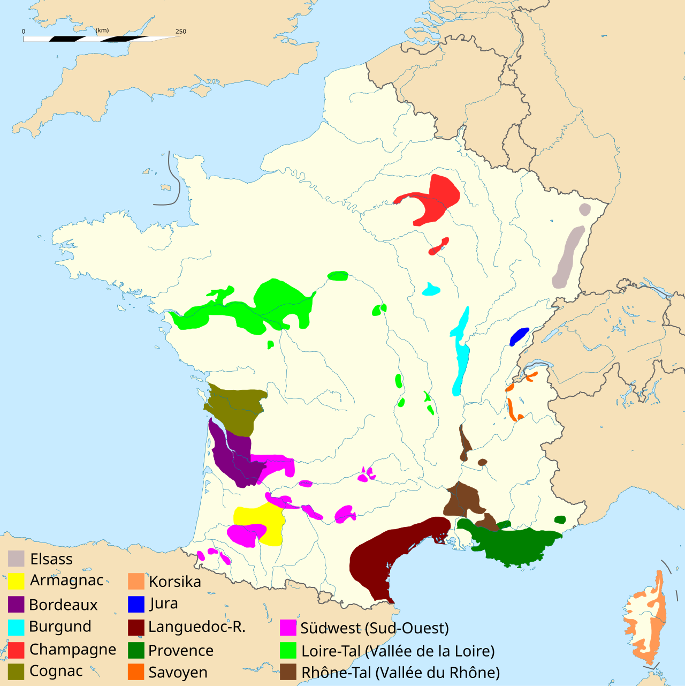
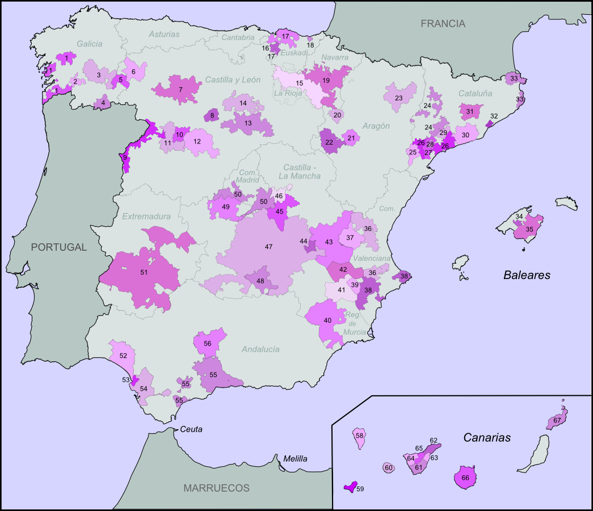

Maischegärung
Bei Rotwein gärt der Most mit Schalen (= Maische) – oft bis zu 2 Wochen. Anthocyane und Tannine gehen aus der Schale in den Wein. Bei Weißwein wird nur der Most gepresst.
👋 Willkommen – Acim und Erzal
Wein ist ein Getränk aus Trauben. Menschen machen Wein seit über 6.000 Jahren. In dieser Präsentation zeigen wir euch 5 Themen: Weinländer, deutsche Gebiete, Rebsorten, Inhaltsstoffe und den Oechsle-Wert.
Europa + Welt-Top-Produzenten – Rebfläche, Ernte, Export & Wirtschaft (Lehrbuch + OIV 2024).
Die größten Weinunternehmen weltweit – von Gallo bis Antinori. Nach Volumen sortiert.
Von der Ahr bis Sachsen. Kühlstes Klima, 65% Weißwein.
Riesling, Spätburgunder, Silvaner und mehr – nur aus Deutschland.
Schale, Fruchtfleisch, Zucker, Säure – und wie Rotwein seine Farbe bekommt.
Deutsche Qualitätsklassen von 44°Oe bis Trockenbeerenauslese.
Rebfläche, Ernte, Export & Wirtschaft · Lehrbuch Kap. 6 + OIV World Report 2024
Rebfläche & Ernte: Lehrbuch Kap. 6 (OIV 2014/15) – für die Präsentation bevorzugt.
Export, Rankings & Wirtschaft: OIV „State of the World Vine and Wine Sector in 2024“ (Produktion 2024, Handel 2024).
Weinmarkt Deutschland: Statista (Umsatz 2023, ca. 4,5 Mrd. €). Wo OIV-Werte abweichen, steht „OIV aktuell“ im Detail-Panel.
| Land | Rebfläche (ha) | Ernte (Mio. hl) | Ertrag (hl/ha) | Export | Weiß / Rot | Besonderheit |
|---|
| Land | Rebfläche (ha) | Ernte (Mio. hl) | Ertrag (hl/ha) | Export | Weiß / Rot | Besonderheit |
|---|
| Land | Ertrag (hl/ha) | Export (Mio. hl) | Exportanteil | Exportwert | Umsatz / Konsum |
|---|
Europa
Weltweit
Klicke auf ein Land in der Tabelle oder hier für alle Details.
Die größten Weinunternehmen nach Produktionsvolumen und Marktbedeutung · Klicke für Details · Filter nach Land
| Rang | Unternehmen | Land | Hauptsitz | Volumen (ca.) | Hauptmarken |
|---|
Klicke auf einen Produzenten in der Tabelle oder auf eine Karte.
Nur Unternehmen mit vergleichbaren Zahlen. Deutsche Sekt-Hersteller zählen Flaschen – siehe Tabelle.
Länder vs. Unternehmen: Italien, Frankreich und Spanien produzieren am meisten Wein – aber viele kleine Weingüter. Die größten Unternehmen kommen oft aus den USA (Gallo, The Wine Group).
Deutschland: Rotkäppchen-Mumm und Henkell Freixenet (Dr. Oetker) sind Weltmarktführer bei Sekt, nicht bei Stillwein.
2025: Vinarchy entstand aus Accolade Wines + Pernod-Ricard-Weinmarken. Constellation verkaufte Massenmarken an The Wine Group.
Quelle: Vinetur „Global Wine Companies" (2025), OIV, Unternehmensberichte (Gallo, TWE, Castel, Henkell Freixenet, Rotkäppchen-Mumm)

Französische Weinregionen – Bordeaux, Burgund, Champagne, Loire, Rhône, Elsass
20% der Weltproduktion. 73% Rot- und Roséwein, 27% Weißwein.
Regionen: Bordeaux, Burgund (Chablis, Côte d'Or, Beaujolais), Rhônetal (Châteauneuf-du-Pape), Loiretal, Elsass (Crémant d'Alsace), Champagne
Weiß: Chardonnay, Sémillon, Sauvignon blanc · Rot: Pinot noir, Gamay, Merlot, Cabernet Sauvignon, Syrah
Bekannt: Château Lafite-Rothschild, Moët & Chandon

Spanische Weinbaugebiete – Rioja, Ribera del Duero, Penedès, Priorat u.a.
17 Weinregionen. 47% Weißwein, 53% Rotwein.
Regionen: Rioja (DOCa), Navarra, Galicien, Ribera del Duero, Rueda, Penedès, Priorato
Weiß: Airén, Verdejo, Albariño · Rot: Tempranillo, Garnacha Tinta, Monastrell
Bekannt: Bodegas Faustino, Miguel Torres, Álvaro Palacios
Terroir = Einfluss von Klima, Boden und Lage auf den Wein
Quellen: Lehrbuch Kap. 6 (OIV 2014/15), OIV State of the World 2024, Statista, FEVS, deutscheweine.de
Südwest-Deutschland · Kühlstes Klima · 65% Weißwein, 35% Rotwein (Rot wird wichtiger)
Gebiet → Bereich → Großlage → Einzellage
Im Gegensatz zu Italien, Frankreich und Spanien unterscheidet Deutschland zuerst nach Herkunft (Gebiet), dann nach Qualität.
Karte braucht Internetverbindung
Klicke auf eine Region – die Detailsektion öffnet sich unten.
Kleinstes Gebiet. Vulkanischer Boden (Schiefer, Basalt). Erste Genossenschaft 1868 in Mayschoß.
Weingüter: Adeneuer, Deutzerhof, Meyer-Näkel, Stodden
Südlichstes Gebiet, 300 km am Rhein. Weinzone B (wärmer). 85% Genossenschaftswein. Kaiserstuhl-Terrassen.
Weingüter: Dr. Heger, Huber, Ziereisen
81% Weißwein. Silvaner ist die edelste Sorte. 4 von 5 Flaschen werden lokal getrunken. „Fränkisch trocken" < 4 g/l.
Würzburger Stein: erste Einzellage (85 ha). Weingüter: Bürgerspital, Fürst, Juliusspital
65% Rotwein – selten in Deutschland! Trollinger, Lemberger (Blaufränkisch), Schwarzriesling.
Weingüter: Aldinger, Beurer, Dautel
Älteste Weinregion. Steile Hänge an Mosel, Saar, Ruwer. Berühmte Lagen: Bernkasteler Doctor.
Weingüter: Dr. Loosen, Egon Müller, Van Volxem
Rechtes Rheinufer, Wiesbaden bis Lorch. Schloss Johannisberg ist historisch wichtig.
Weingüter: Robert Weil, Schloss Johannisberg, Georg Breuer
„Land der 1000 Hügel". Größte Rebfläche Deutschlands. Nierstein, Oppenheim bekannt.
Weingüter: Keller, Gunderloch, Wagner-Stempel
Größtes Weinfest der Welt (Bad Dürkheim). Älteste Weinroute. Warmes Klima.
Weingüter: Bürklin-Wolf, von Winning, Müller-Catoir
Romantische Flusstäler und dramatische Felsen an der Nahe. Vielfältige Böden: Schiefer, Sandstein, Löss.
Weingüter: Dönnhoff, Emrich-Schönleber, Schäfer-Fröhlich
Malerisches Rheintal zwischen Bingen und Bonn. UNESCO-Welterbe Oberes Mittelrheintal.
Weingüter: J.J. Adenehr, Toni Jost
Kleinstes Gebiet. Mandelblüte im März – Frühling kommt hier zuerst.
Weingüter: Hessische Staatsweingüter
Terrassierte Weinberge an Saale und Unstrut. Weinbau seit über 1000 Jahren. Freyburg ist das Zentrum.
Weingüter: Winzerhof Gussek, Zahn
Weinberge bei Dresden und Meißen. Am 51. Grad nördlicher Breite. Goldriesling ist eine Spezialität.
Weingüter: Schloss Proschwitz, Wackerbarth
Quelle: Lehrbuch Kap. 7, deutscheweine.de, DWI
Nur Sorten aus Deutschland · Quelle: Lehrbuch Kap. 7
Klicke auf eine Sorte für Details zu Botanik, Aromen, Gastronomie und Fotos.
Quelle: Lehrbuch Kap. 7, BMEL-Statistik
Anatomie und Chemie – Klicke auf das Diagramm oder die Karten
Botanisches Diagramm – Klicke auf die markierten Bereiche
Beschreibung auf Deutsch in der Seitenleiste (Diagramm: LadyofHats, Wikimedia Commons)
| Stoff | Funktion | Anteil (ca.) | Ort in der Beere |
|---|---|---|---|
| Wasser | Basis des Mosts | 70–80 % | Fruchtfleisch |
| Zucker | Gärung → Alkohol + CO₂ | 15–25 % | Fruchtfleisch |
| Säuren | Frische, Haltbarkeit | 0,5–1 % | Fruchtfleisch |
| Tannine | Struktur, Farbe, Adstringenz | wenig | Schale, Kerne |
| Aromastoffe | Geruch und Geschmack | sehr wenig | Schale, Fruchtfleisch |
| Pektin | Zellstruktur, Klärung | wenig | Zellwände |
| Mineralstoffe | Terroir-Geschmack | Spuren | Gesamt |
Bei Rotwein gärt der Most mit Schalen (= Maische) – oft bis zu 2 Wochen. Anthocyane und Tannine gehen aus der Schale in den Wein. Bei Weißwein wird nur der Most gepresst.
Milchsäurebakterien wandeln scharfe Apfelsäure in mildere Milchsäure um. Der Wein wird weicher und runder – typisch bei vielen Rotweinen.
Eichenfass mit 225 Liter (= ca. 300 Flaschen à 0,75 L). Das Holz gibt Aroma und leichten Sauerstoffkontakt.
| Toastung | Aroma |
|---|---|
| Leicht | Vanille |
| Mittel | Karamell |
| Stark | Bittere Schokolade |
Quelle: Lehrbuch Kap. 6–7, DWI, Delinat · Bilder: Wikimedia Commons (CC)
Deutsche Qualitätsklassen – einfach erklärt · Quelle: Lehrbuch Kap. 7
Oechsle (°Oe) misst das Mostgewicht – wie schwer der Traubensaft im Vergleich zu Wasser ist. Wasser wiegt 1.000 Gramm pro Liter. 1 °Oe = 1 Gramm mehr als 1 Liter Wasser. Beispiel: 80 °Oe bedeutet, der Most ist 80 g/l schwerer als Wasser.
Mehr Zucker in den Trauben → schwererer Most → höherer Oechsle-Wert → reifere Trauben.
Winzer messen den Oechsle-Wert bei der Ernte, vor der Gärung – also am frischen Traubensaft (Most).
Der Winzer tropft einen Tropfen Most auf das Prisma und liest den Wert durch das Okular. Schnell und genau – heute am häufigsten.
Ein Schwimmer (Aräometer) schwimmt im Most. Je mehr Zucker, desto höher schwimmt er. Traditionelle Methode.
Wer nutzt Oechsle? Winzer, amtliche Prüfer und die Qualitätskontrolle.
Wein ab 44°Oe (Zone A) / 50°Oe (Zone B) · Landwein ab 47°Oe · Qualitätswein ab 57°Oe
Kabinett (67–82) → Spätlese (76–90) → Auslese (83–100) → BA (110–128) → TBA (150–154)
Ca. 0,63 % Alkohol pro 1 °Oe (grob). Höherer Oechsle = mehr Zucker = mehr Alkohol möglich
Höhere Prädikate (Spätlese, Auslese, Eiswein) sind oft teurer – weniger Ernte, mehr Arbeit
Kabinett: leicht zu Fisch · Spätlese: zu Käse · Auslese/Eiswein: zu Dessert – kann aber auch trocken sein!
Bewege den Regler oder klicke eine Prädikat-Karte unten
Geschmack: kann trocken ODER süß sein – der Winzer entscheidet!
Bei 76°Oe: typisch Mosel Spätlese Riesling
| Produkt | °Oe | Erklärung | |
|---|---|---|---|
| Mosel Kabinett Riesling | ~70 | Leicht, frisch, oft trocken | |
| Rheingau Spätlese | ~85 | Reifer, voller, oft halbtrocken | |
| Pfalz Auslese | ~95 | Selektiert, edel, oft süß | |
| Eiswein | 110+ | Gefrorene Trauben, sehr süß und selten |
| Klasse | Min. °Oe | Details |
|---|---|---|
| Wein aus Deutschland | 44 (Zone A) / 50 (Zone B) | Einfachste Klasse. Zone B = nur Baden. Natürlicher Alkohol: 5% (A) / 6% (B) |
| Landwein | 47 | 85% Trauben aus der Region. Nur trocken oder halbtrocken. 26 Landweinregionen |
| Qualitätswein | 57 | Höchste Klasse mit Prädikaten. Min. Gesamtsäure: 3,5 g/l. Nach Anreicherung: min. 8,5% Vol. |
Klicke eine Karte – der Simulator springt zum typischen Wert
Deutschland nutzt Oechsle. Andere Länder: Brix (USA, UK), Baumé (Frankreich, Spanien), KMW (Österreich, Italien). Alle messen dasselbe: Zuckergehalt im Most.
Italien, Frankreich und Spanien unterscheiden zuerst nach Herkunft (Region), dann nach Qualität. Deutschland macht es umgekehrt: erst Qualitätsklasse, dann Herkunft.
Quelle: Lehrbuch Kap. 7, Weinfreunde.de, Weinverordnung
Alle Daten mit Quellenangabe
Acim & Erzal · Klasse HFU1 · Partnerarbeit Wein